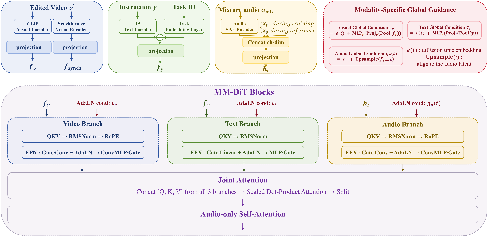

Main Contributions
We propose TV-AudioRemover, a text‑visual guided sound removal model. The key contributions of TV-AudioRemover are as follows.
• A high-quality data construction pipeline.
It generates million-scale single-object audio-video aligned samples and synthesizes task-specific mixture-target pairs for target removal from these samples.
• A modality-decoupled audio editing architecture.
With task tokens and global modal guidance, the model effectively distinguishes preservable and suppressible audio under joint visual-textual conditions.
• A multi-task curriculum training strategy.
Combined multi-task supervision and two-stage curriculum learning enhances task understanding and fine-grained acoustic discrimination capacity.
• AV-Remove-Bench.
the first audio-visual target removal benchmark with comprehensive scene diversity and broad acoustic coverage, equipped with dedicated objective metrics and an MLLM-based evaluation protocol.
Extensive experiments demonstrate that TV-AudioRemover achieves state-of-the-art performance on both subjective and objective metrics.
